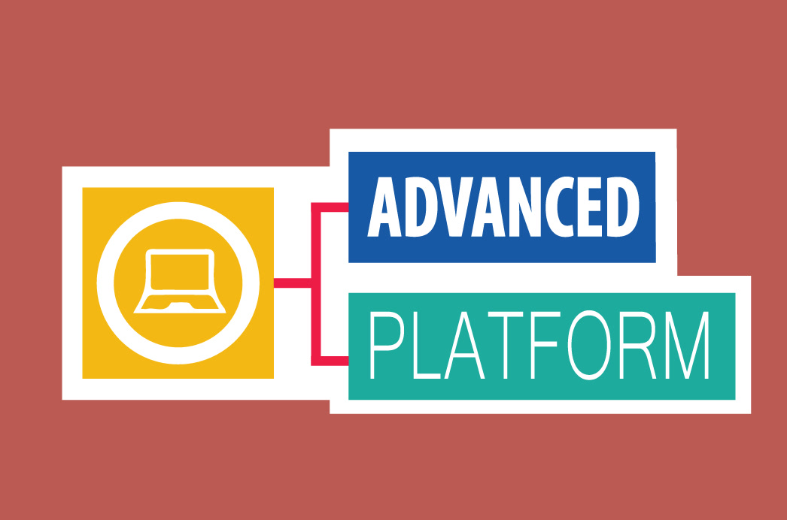

Nella scheda del Talent Day vi presentate con soluzioni software «in breve tempo, a costi decrescenti e qualità crescente». È una promessa che si dimostra meglio con un video che con un testo.
Fonte: Scheda Unite Talent Day 2026Promettete software «in breve tempo, a costi decrescenti e qualità crescente». Questa proposta lo fa vedere in 30 secondi, a chi decide in una software house.
Idea non commissionata · i marchi appartengono ai rispettivi proprietariSolo dati pubblici, letti il 18 novembre 2026, ognuno con la sua fonte. Da qui parte la proposta.
Nella scheda del Talent Day vi presentate con soluzioni software «in breve tempo, a costi decrescenti e qualità crescente». È una promessa che si dimostra meglio con un video che con un testo.
Fonte: Scheda Unite Talent Day 2026Sul sito restano tracce di un altro progetto, E-ccomy: descrizione, cookie policy, alcuni link. Chi vi cerca dopo il Talent Day non trova BtoCode raccontato fino in fondo.
Fonte: btocode.com, 18/11/2026Per un software rivolto a software house e CED il canale principale è LinkedIn. Una pagina aziendale di BtoCode non l'ho trovata.
Fonte: Ricerca del 18/11/2026Non ho trovato profili social attivi di BtoCode. Ho guardato il sito e i canali collegati.
La mia letturaUn responsabile IT si convince più con una dimostrazione che con una promessa: un modello che diventa un gestionale funzionante davanti ai suoi occhi.
Una serie di demo brevi registrate a schermo: un modello che diventa un gestionale funzionante, con il tempo che scorre in un angolo. Ogni demo dura meno di un minuto e mostra un caso d'uso tipico, come un gestionale ordini o un CRM. Accanto alla serie, una pagina su LinkedIn e una landing semplice che spiega BtoCode in tre passaggi.
Le prime uscite della campagna, come le vedreste sul vostro profilo: la griglia del profilo dopo le uscite e ogni post con la sua didascalia. Bozze di concept costruite sulle vostre immagini ufficiali.
Bozza di concept: post e didascalie sono esempi scritti da me, non contenuti ufficiali dell'azienda.
BtoCode

Un modello UML, un click, un gestionale ordini funzionante. Il cronometro resta acceso per tutta la demo. Lavori in una software house? Scrivici.
PerchéLa demo mostra il prodotto meglio di qualsiasi slogan.
Promettere velocità è facile. Noi preferiamo mostrarla. Ogni settimana una demo vera: un modello diventa un gestionale funzionante, con il tempo che scorre a schermo.
Dal modello al gestionale funzionante: nella demo vedi il percorso su un caso reale, da costruire con voi. Lavori in una software house? Scrivici e facciamo la prova sul tuo progetto.
Il codice ripetitivo è quello che costa di più e insegna di meno. Nella demo ti mostriamo quanto se ne può generare. Il link è nei commenti.
Un cronometro parte a 00:00 nel primo fotogramma: chi guarda vuole sapere dove si ferma.
Demo 1 · Gestionale ordini
♫ Audio originaleReel da 19 s, montato in motion graphics sulle vostre immagini ufficiali e sui vostri numeri. Tocca il video per fermarlo.
Area: marketing, commerciale e ICT. Non è un post: è un progetto pilota, piccolo e misurabile, da decidere con voi.
Il sito mescola BtoCode con testi di un vecchio progetto, E-ccomy: chi arriva da una ricerca fatica a capire cosa fate e non ha un modo semplice per vedere il prodotto. Si sistema in poche settimane.
Una pagina nuova in tre passaggi (modello, genera, funziona), con la demo registrata e un calendario per prenotare una demo dal vivo. Accanto, una lista di software house del Centro Italia da contattare su LinkedIn, e un incontro con gli studenti di informatica di UniTE per far provare la piattaforma.
Demo prenotate, software house contattate e risposte, prove gratuite avviate.
Perché è diversoTrasforma un prodotto difficile da spiegare in una demo che si prenota da sola.
Test con poco budget. Si sponsorizza su LinkedIn la demo migliore verso titolari e responsabili tecnici di software house in Italia, e si misura il costo per richiesta di prova.